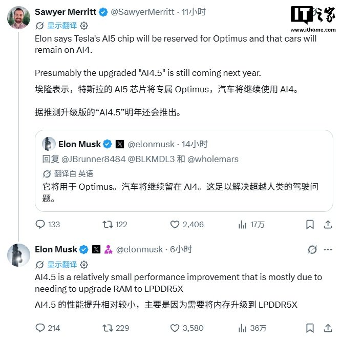

新闻 · 2026-11-23 12:00
特斯拉 AI4.5 芯片有望明年推出，马斯克称内存太贵、从 32GB 降到 24GB
特斯拉CEO马斯克称AI4.5芯片预计明年推出，内存因成本高从32GB降至24GB，性能提升有限，主要升级为LPDDR5X；AI5芯片将专用于Optimus机器人，AI4仍用于汽车，AI5在计算与内存上将比AI4提升8倍与9倍。

来源与核验
单一信源报道，未交叉核实
特斯拉CEO马斯克称AI4.5芯片预计明年推出，内存因成本高从32GB降至24GB，性能提升有限，主要升级为LPDDR5X；AI5芯片将专用于Optimus机器人，AI4仍用于汽车，AI5在计算与内存上将比AI4提升8倍与9倍。

单一信源报道，未交叉核实